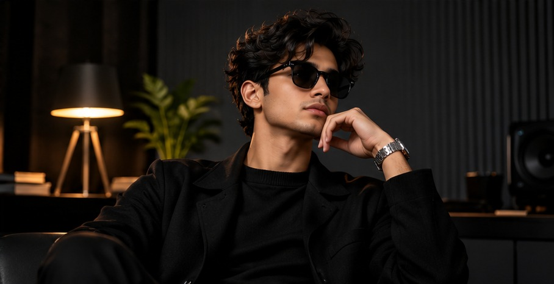

A little about me
Creative thinking.
Practical execution.

Hi, I’m Alok.
I’m a freelance AI Content Specialist, Video Editor, and Photo & Graphic Designer based in Deoghar, Jharkhand, India — open to remote projects worldwide.
My approach combines generative AI workflows with hands-on creative tools to help turn ideas into engaging videos, polished visuals, and ready-to-publish content. I work independently with a flexible, deadline-driven schedule.
Education & learning
BITS Pilani — Higher Education Studies, India
Japan — International Specialized Coursework / Academic Study Program
Creative toolkit
MidjourneyRunwayElevenLabsChatGPTPremiere ProAfter EffectsCapCut ProDaVinci ResolvePhotoshopIllustratorCanva